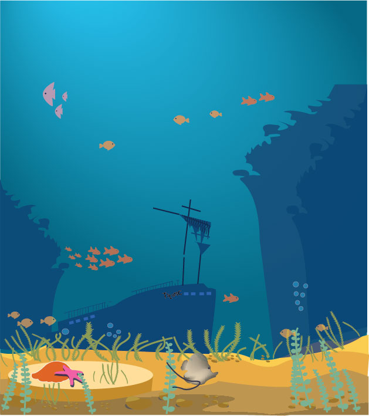

Vježba 1 - font
vježba koju smo radili u programu fontforge

vježba 2
Crtanje Bezierovih krivulja u koordinatnom sustavu
Bezierova krivulja je parametarska krivulja definirana sa 4 točke i predstavlja temelj današnje vektorske grafike

Vježba 3
Kreiranje objekta pen toolom
U ovom zadatku smo radili cvijet pomoću pen toola, reflection toola i switches

Vježba 4
U vježbi se obrađuje tema izrade složenih objekata koji se sastoje od više staza metodama spajanja (Unite/Compound path) ili oduzimanja oblika (Difference/Subtract). Apliciranje različitih vrsta gradijenata (linearni, radijalni, mesh) od dvije ili više boja. Transparencija i poredak slojeva u izradi složene grafike.
Radili smo vinsku čašu i temu po izboru

Projektni zadatak 1
Za projektni zadatak smo trebali kreirati temu iz faune podmorja u illustratoru.
Neki od potrebnih elemenata za ovaj projekt su bili transparencija, gradijent, swatches, mesh...

Vježba 5 - retuširanje
Za ovaj zadatak smo koristili tehnike retuširanja, imali smo dvije slike na kojima smo popravljali greške.
Koristili smo clone tool, healing tool, brush itd.

Vježba 6 - koloriranje
U vježbi prolazimo kroz tehnike neinvazivnog koloriranja slike koje se može primijeniti na crno-bijele slike ili slike u boji kojima želimo promijeniti nijansu određenih područja.
Selekcijom željenih dijelova slike stvaramo maske kojima skrivamo ili otkrivamo efekte kolorizacije.
Boja se aplicira na zaseban sloj (layer) kako ne bismo uništili originalne tonove i kako bismo mogli lakše napraviti promjene u kasnijim fazama obrade slike.

Vježba 7 - fotomontaža
Glavni cilj fotomontaže je kombiniranje više fotografija izrezivanjem dijelova različitih slika i spajanjem u jednu cjelinu.
Pritom je najvažnije kvalitetno selektirati dijelove koje želimo izrezati kako bi se što bolje uklopili u finalnu sliku.
U ovoj vježbi prolazimo kroz različite tehnike selektiranja jednostavnih i složenih oblika.
Jednostavne tehnike selekcije uključuju alate kojima selektiramo poligone i oštre rubove objekata, a složenije tehnike selekcije podrazumijevaju selekciju putem kanala slike ili crtanje maski brush i eraser alatima u modu quick mask.
Vježba se bavi i izradom i uklapanjem sjena objekata koje smo uvezli izrezivanjem i korekcijom boja kako bi se pojačao dojam realističnosti.

Projektni zadatak 2

Vježba 8 - obrada videa - kinemagraf
Ova vježba se bavi osnovama obrade video materijala i uvođenjem multimedije u video projekt. Rezultat vježbe će biti kinemagraf čija je karakteristika spajanje statične i pokretne slike.
Definicija: Kinemagraf ili eng. cinemagraph je video isječak čija se sekvenca ponavlja u beskonačnost, najčešće u GIF formatu, a u kompoziciji spaja pokretnu i statičnu grafiku (sliku i video). Dok je većina grafike statična, samo mali dio je animiran (pokretan).